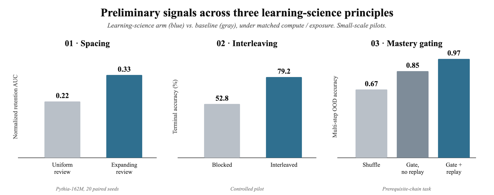

Spacing (spaced vs. uniform review). Holding exposures, token budget, and first/last timing fixed, expanding-interval review beat uniform review on knowledge retention through training (normalized retention AUC 0.33 vs. 0.22; 95% CI on the gap 0.01–0.19; Pythia-162M, 20 paired seeds); both far exceeded no review. The gain concentrates mid-training and narrows by the final checkpoint — motivating the controlled synthetic-fact study now designed.
Interleaving (blocked vs. interleaved subjects). Mixing arithmetic, logic, geometry, and statistics rather than teaching them in blocks lifted terminal accuracy from 52.8% to 79.2% in a controlled pilot; single-subject models showed zero order effect, ruling out artifacts. A ~195M OLMo-core, compute-matched confirmatory run is specified.
Mastery gating (advance only when competence is proven). On a task with genuine prerequisite structure, a mastery gate + replay was the strongest schedule — multi-step out-of-distribution accuracy 0.97 vs. 0.67 for shuffle — and replay prevented the catastrophic forgetting that collapsed a naive gate. It also reached advanced skills using fewer tokens.
Synthetic student (evaluating curricula). We can build a small “student” model to score curricula by measured learning gains; we recommend a bounded validation phase first, and are explicit about where LLM learning diverges from human learning.
Bottom line. Under matched compute, early evidence indicates that core learning-science principles transfer to pretraining, with spacing and mastery-gating + replay the most promising. Confirmatory, preregistered runs are scoped and low-cost (hundreds to ~$10k each).
